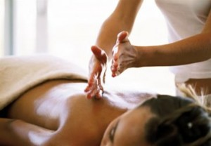
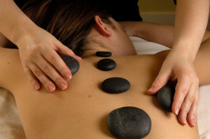

Masaż – zabieg fizjoterapeutyczny polegający na sprężystym (nieplastycznym) odkształcaniu tkanek.
Masaż jest to zespół ruchów wywierających ucisk na tkanki i polega on na wykorzystaniu przez masażystę określonych ruchów w określonym tempie i z odpowiednią siłą zgodnie z przebiegiem mięśni, tkanek, naczyń krwionośnych i limfatycznych, od ich obwodu do serca. Masaż powinien być wykonywany rytmicznie, bez rozciągania skóry nieuzbrojoną ręką.
Masaż może mieć cele lecznicze, relaksacyjne lub przygotowywać mięśnie do wysiłku.
{kind=link}
MASAŻ KLASYCZNY (30 MINUT)
Masażem klasycznym nazywamy zespół różnych zabiegów manualnych, które w sposób mechaniczny, przez powierzchnię ciała działają na skórę, tkankę podskórną, mięśnie, torebki stawowe i więzadła, a także w postaci zmian odruchowych na układ krążenia, nerwowy, wewnątrzwydzielniczy do narządów wewnętrznych włącznie.
MASAŻ LECZNICZY (30 MINUT)
masaż polegający na wykorzystywaniu dotyku w celu wywołania uczucia odprężenia i dobrego samopoczucia.
Istnieje wiele technik tego masażu, wszystkie jednak polegają na stosowaniu systematycznych ruchów nacierania, głaskania, uciskania, ugniatania lub mocnego oklepywania skóry, mięśni lub stawów. Można go łączyć z innymi zabiegami leczniczymi t.j. aromaterapią czy hydroterapią.
Masaż leczniczy opiera się na technikach masażu klasycznego.
Stosuje się go dla złagodzenia sztywności, napięcia i bólu mięśni, migrenowego i napięciowego bólu głowy oraz bólu lędźwiowo-krzyżowego, dla ogólnego odprężenia, dla przezwyciężenia stresu. Masaż leczniczy może usuwać skurcze nóg. Masowanie pleców i ramion pomaga kobietom w bólach porodowych. Zwykle masaż leczniczy polega na rozluźnianiu mięśni oraz łagodzeniu napięcia psychicznego, a to przynosi ulgę i uczucie odprężenia. Ten rodzaj masażu zwiększa dopływ krwi do masowanego miejsca, co przyspiesza proces leczenia.
MASAŻ WELLNESS (60 MINUT)
Masaże wellness obejmują holistyczną pielęgnację całego organizmu poprzez oddziaływanie na wszystkie jego zmysły. Indywidualnie dobrane tempo i intensywność masażu, kojąca muzyka i ciepłe światło świec tworzą niepowtarzalną atmosferę zabiegu. Aromatyczne olejki i kremy do masażu połączone z troskliwym dotykiem dłoni terapeuty pozwalają na długo uspokoić umysł i zrelaksować ciało.
Masaże wellness polecamy szczególnie w przypadku:
*stresującego trybu życia,
*bezsenności lub niedostatecznej ilość snu,
*zmęczenia organizmu.
MASAŻ SPORTOWY (30 MINUT)
Masaż sportowy w swoich technikach podobny jest do klasycznego masażu leczniczego. Wykonywany jest zdecydowanie silniej i energiczniej.
Celem masażu sportowego jest jak najszybsze przygotowanie do ekstremalnego wysiłku sportowego, osiągniecie maksymalnych wyników sportowych, jak i usuniecie dużego zmęczenia organizmu po wysiłku fizycznym. Na skutek stosowania masażu sportowego dochodzi do usunięcia zakwasów, napięć mięśniowych bądź likwidacji powstałych kontuzji.
Masaż sportowy jest integralnym elementem systemu odnowy biologicznej. Wykorzystywany jest jako środek pomocniczy w profesjonalnych programach treningowych. Pozwala lepiej przygotować ciało sportowca do wysiłku fizycznego. Zmniejsza ryzyko wystąpienia kontuzji. Masaż sportowy jest zalecany zarówno sportowcom zawodowym jak również powinni korzystać z niego sportowcy – amatorzy, dla osiągnięcia lepszych rezultatów i poprawy samopoczucia. Techniki masażu sportowego jako działanie terapeutyczne dostosowane są ściśle do uprawianej dyscypliny sportu.
MASAŻ ANTYCELLULITOWY (30 MINUT)
Dlaczego jest to masaż dla Ciebie?
Masaż antycellulitowy, wyszczuplający przeznaczony jest zarówno dla kobiet, jak i mężczyzn. Na cellulit i problem z nadmiarem tkanki tłuszczowej cierpi co drugi człowiek bez względu na wiek i płeć. To stres, brak ruchu, nieodpowiednia dieta i przepracowanie coraz częściej “męczy” nasze ciało i skórę.
Jeżeli pojawiły się na Twojej napiętej skórze delikatne zaciemnienia i lekkie nierówności, to może być to już drugie stadium cellulitu. Musisz wiedzieć, iż cellulitu, nadwagi i problemów z obrzmiałymi nogami nie powinno się lekceważyć. Masaż jest również polecany po zabiegu lipolizy.
Chcesz mieć ładniejszą i jędrniejszą skórę? Jeżeli tak, to polecam Ci kilka / kilkanaście sesji masażu antycellulitowego, który jest w takich sytuacjach najbardziej dla Ciebie wskazany.
Co dobrego daje Ci masaż antycellulitowy, wyszczuplający?
Po serii masażu antycellulitowego następuje widoczna redukcja tkanki tłuszczowej. Widocznie zmniejszają się obwody ciała, a skóra na Twoich biodrach , brzuchu , udach lub ramionach staje się bardziej sprężysta i jędrniejsza.
Następuje również oczyszczenie organizmu z toksyn i nadmiaru tkanki tłuszczowej, oraz poprawa konsystencji i barwy skóry.
Najlepszym, zlecanym i wymaganym rozwiązaniem podczas kuracji masażem wyszczuplającym, jest wzajemna współpraca moja (jako masażysty) i Twoja (jako klienta). Daje to najlepsze efekty oraz trwałą poprawę.
MASAŻ IZOMETRYCZNY (30 MINUT)
Masaż izometryczny: masaż klasyczny leczniczy stosowany przy zanikach mięśniowych, wykonywany na napiętych grupach mięśniowych lub na pojedynczym napiętym mięśniu. Zadaniem tego zabiegu jest przywrócenie masy i siły osłabionym mięśniom bez obciążania organizmu ćwiczeniami fizycznymi.
MASAŻ SEGMENTARNY (30 MINUT)
Masaż segmentarny to techniki masażu leczniczego i diagnostycznego, opierające się na teorii wzajemnego oddziaływania skóry, tkanki łącznej i mięśniowej z narządami wewnętrznymi.
MASAŻ GORĄCYMI KAMIENIAMI (30 MINUT)
Niepowtarzalny zabieg masażu ciepłymi kamieniami pochodzenia wulkanicznego pozwala odczuć leczniczy i kojący wpływ energii wnętrza ziemi, a także dobroczynne działanie termoterapii i aromaterapii. Łączy w sobie znakomitą pielęgnację z absolutnym odprężeniem i odczuwalnym dopływem energii. Ma działanie witalizujące i lecznicze, doskonale likwiduje wszelkie napięcia i bóle mięśni.
{kind=link}
MASAŻ BAŃKAMI CHIŃSKIMI (30 MINUT)
 Masaż bańka chińską ma niezwykłą moc w walce z niedoskonałościami skóry lub jako drenaż limfatyczny. Jest połączeniem medycyny chińskiej starożytnej i wiedzy współczesnej. Zabieg przynosi widoczne efekty w krótkim czasie.
Masaż bańka chińską ma niezwykłą moc w walce z niedoskonałościami skóry lub jako drenaż limfatyczny. Jest połączeniem medycyny chińskiej starożytnej i wiedzy współczesnej. Zabieg przynosi widoczne efekty w krótkim czasie.
Komu polecamy bańkę chińską:
*osoby mające problemy skórne (luźna, obwisła, szara, dystroficzne)
*osoby mające obrzęki limfatyczne
*osoby prowadzące siedzący tryb życia
*osoby przemęczone, zestresowane
*osoby po wyczerpującym wysiłku fizycznym